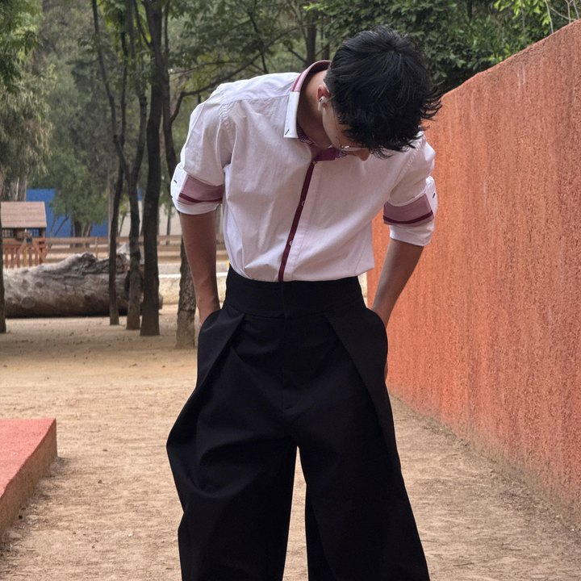
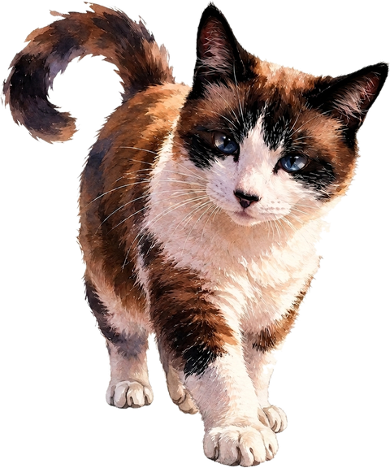
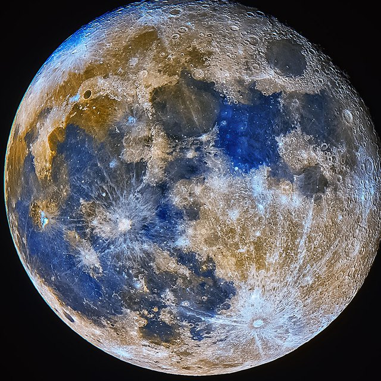

Soy Angel. Estudio Ingeniería en Sistemas, hago fotografía y me gusta resolver problemas. Si no estoy trabajando o en algún proyecto estoy durmiendo con mis gatos, entrenando, en algún lugar aleatorio o con mis amigos. Me gusta ver el cielo, la luna y las estrellas.

♠️

cuando no estoy con algo tecnológico…
🐱
Gatos
Kami y Orión. También andan sueltos por aquí.
🥊
Deportes
Box, gim, basket, fútbol… de todo.
🎮
Videojuegos
Casi siempre en coop: los logros saben mejor compartidos.
🛠️
Proyectos
Siempre buscando algo nuevo que construir o mejorar.
🌹
Conectando
Los que eran mis amigos ahora son mi familia. Me encanta estar con ellos.
🌙
Cielo
Viendo el cielo desde algún techo o en el pasto, de noche o de día.
💤
Descansando
Durmiendo o despejándome. Hay que estar bien descansados para darlo todo siempre.
📍
Perdido
No me sé ubicar, pero siempre llego.

月
02 · anima
Fotografía
Capturo retratos, eventos y productos. Atención independiente, trato directo.
光
03 · automatización & datos
Sistemas
Automatizo lo repetitivo y convierto datos en decisiones. Menos trabajo manual, más tiempo para lo que importa.
CASO_01
Automatización de pruebas de RRHH
Problema
Calificar Terman-Merrill y Cleaver a mano tomaba ~20 min por prueba.
Qué hice
Programé en Python la calificación de ambas pruebas: Terman como aplicación de escritorio (.exe) y Cleaver como web-app. Las dos exportan en PDF sus resultados y gráficas, al instante y sin errores de cálculo.
Resultado
20 → 4 min por prueba (−80%)
CASO_02
Digitalización de documentos
Problema
Procesos en papel, lentos y difíciles de rastrear.
Qué hice
Flujos digitales vinculados a Google Workspace.
Resultado
+50% menos tiempo de proceso
CASO_03
Análisis de ventas y stock
Problema
Inventario sin niveles claros: faltantes y sobrantes.
Qué hice
Máximos y mínimos por producto a partir de los datos de venta del año anterior.
Resultado
Visión clara de productos óptimos definidos por datos
LOGRO_★
Innovation Meetup 2025 - Cancún
Reto
Prototipo de web para venta a colaboradores de la empresa, contra equipos de todo el país.
Qué hicimos
Prototipo, documentación técnica/BPM y presentación en inglés.
Resultado
Finalista nacional
LOGRO_★
Innovation Meetup 2026 - Cancún
Reto
Para HPE: convertir datos públicos de empresas en oportunidades comerciales priorizadas, sin el costo de un CRM tradicional.
Qué hicimos
ALICE (Account-Level Intelligence & Customer Evaluation): plataforma con motor de IA que arma el perfil 360° de cada cuenta, un Strategic Score de propensión de compra, recomienda soluciones HPE y genera el speech comercial. Backend Python/FastAPI + SQLAlchemy, desplegable local o en la nube.
$ cat objetivo.txt Me estoy adentrando en la ciberseguridad, automatización, consultoría y mejora de procesos. Tengo las bases y las estoy llevando más lejos, aprendiendo constantemente y superando desafíos, obstáculos y miedos.